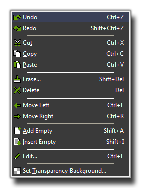
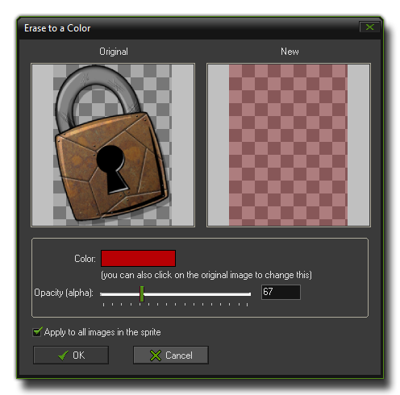
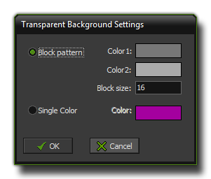

The Sprite Editor Edit Menu
This section explains the edit menu functions
associated with the GameMaker: Studio sprite editor.
 The edit menu contains
a number of commands related to the edition of sub-images within
the sprite (most of these commands are the same as those found on
the toolbar as buttons):
- Undo: This will undo the last action, and you can
repeatedly undo consecutive actions with this button, but note that
the number of undos that can be performed is limited to
16.
- Redo: If you have used the undo function, you can use
this to go back to the state that you undid. This is limited to the
number of undos that you have done previously.
- Cut: You can use this to "cut" a sub image out of the
list of sub-images. This cut image is stored to the clipboard and
can then be pasted into another part of the same sprite, another
sprite resource or even into some other program, independent of
GameMaker: Studio. Please note that the transparencies may
not be the same when pasted into another program.
- Copy: This button will copy the currently selected
sub-image into the clipboard for use in another place, either the
same sprite, another sprite or even an alternate program.
- Paste: You can use this button to paste whatever image
you have previously stored in the clipboard (with cut, or copy)
into the current sprite as a new sub-image. If the pasted image is
larger or smaller than the current sprite, you will be shown the
"Inserting Image" window (see "Add A Sprite From A File", above).
If the image has been copied from a source other than GameMaker:
Studio, then transparencies may not be the same.
- Erase: As you might imagine, this command erases one or
all images to a particular colour. The following window will open
when you select this: 
What this does is it removes all the current pixel information, but
not the sub-image itself, and replaces it with a single colour of
your choice. You can also adjust the transparency and select
whether you want to erase all the sub-images, or just the currently
selected one.
- Delete: Delete the currently selected sub-image,
removing it from the sprite completely.
- Move Left: Move the currently selected sub-image one
position to the left in the sequence.
- Move Right: Move the currently selected sub-image one
position to the right in the sequence.
- Add Empty: Add a new empty sub-image at the end of the
sequence.
- Insert Empty: Insert a new empty sub-image before the
currently selected subimage.
- Edit: Edit the currently selected sub-image using the
built-in image editor. More on this in the section Editing Sub-images.
- Set Transparency Background: Here you can indicate how
the transparent area of the sprites should be shown in the sprite
editor. You can either use a customizable block pattern, or a
colour that you can change by clicking on the colour box, as shown
in the following image (note that this does not affect the sprite
itself, only how you view it in the editor): 
© Copyright YoYo Games Ltd. 2018 All Rights Reserved